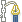

| 5. Paths | ||
|---|---|---|
 |
Chapter 7. Painting with GIMP |  |
| 5. Paths | ||
|---|---|---|
| |
Chapter 7. Painting with GIMP | |
Paths are curves (known as Bézier-curves). In GIMP it's very easy to learn and to use them. To understand their concepts and mechanism you can go to the glossary Bézier-curve or to Wikipedia http://en.wikipedia.org/wiki/Bézier_curve. It is a very powerful tool to design sophisticated forms. To use it in GIMP you must operate by two successive ways: 1st Create the path and 2nd Stroke path.
According to the terminology used in GIMP, “Stroke path” means here to apply a specific style to the path (color, width, pattern... ).
Paths are used for two main purposes:
A closed path can be converted into a selection.
An open or closed path can be stroked, that is, painted on the image, in a variety of ways.
Figure 7.10. Illustration of four different path creating.
Four examples of GIMP paths: one closed and polygonal; one open and polygonal; one closed and curved; one with a mixture of straight and curved segments.
At this step you can design a skeleton of wished form; this skeleton will be modified later by various ways. To do this you can go to Paths. A short example will be useful to understand the creating process.
In menu click → in image window
or on the relevant icon  in toolbox
or use hotkey B
Your pointer changes into a pen feature with a curve beginning; if you click in the image you print a point (white inner circle with a black border); moving mouse and right-clicking again you create automatically a second point linked to previous one. You can carry on as often as you wish it to design a polyline, but to learn you need two points only. Now if you approach pointer close to segment ranging between the two points, the little “+” close to pointer changes into a cross (for moving). Now press down right button moving pointer to any side.
Then two events occur. One is a bending of the segment to the moving direction and this bending is proportional to displacement. The second reveals two segments ended with squares (named handles) at the two curve ends . If you place the mouse pointer on these squares it changes into a pointing finger. Now, if you click-and-drag you can see the consequence on the curve feature. By this mean you can change the starting curve orientation as well as its “lengthening” on modified side.
Figure 7.11. Appearance of a path while it is being manipulated using the Path tool.
Black squares are anchor points, the open circle is the selected anchor, and the two open squares are its handles. Note that this path has two components.
Paths can be created and manipulated using the Path tool. Paths, like layers and channels, are components of an image. When an image is saved in GIMP's native XCF file format, any paths it has are saved along with it. The list of paths in an image can be viewed and operated on using the Paths dialog. If you want to move a path from one image to another, you can do so by copying and pasting using the pop-up menu in the Paths dialog, or by dragging an icon from the Paths dialog into the destination image's window.
GIMP paths belong to a mathematical type called “Bezier paths”. What this means in practical terms is that they are defined by anchors and handles. “Anchors” are points the path goes through. “Handles” define the direction of a path when it enters or leaves an anchor point: each anchor point has two handles attached to it.
Paths can be very complex. If you create them by hand using the Path tool, unless you are obsessive they probably won't contain more than a few dozen anchor points (often many fewer); but if you create them by transforming a selection into a path, or by transforming text into a path, the result can easily contain hundreds of anchor points, or even thousands.
A path may contain multiple components. A “component” is a part of a path whose anchor points are all connected to each other by path segments. The ability to have multiple components in paths allows you to convert them into selections having multiple disconnected parts.
Each component of a path can be either open or closed: “closed” means that the last anchor point is connected to the first anchor point. If you transform a path into a selection, any open components are automatically converted into closed components by connecting the last anchor point to the first anchor point with a straight line.
Path segments can be either straight or curved. A path all of whose segments are straight is called “polygonal”. When you create a path segment, it starts out straight, because the handles for the anchor points are initially placed directly on top of the anchor points, yielding handles of zero length, which produce straight-line segments. You can make a segment curved by dragging a handle away from one of the anchor points.
One nice thing about paths is that they are very light in terms of resource consumption, especially in comparison with images. Representing a path in RAM only requires storing the coordinates of its anchors and handles: 1K of memory is enough to hold quite a complex path, but not enough to hold even a 20x20 pixel RGB layer. Therefore, it is quite possible to have literally hundreds of paths in an image without putting any significant stress of your system. (How much stress managing them would put on you is, of course, another question.) Even a path with thousands of segments consumes minimal resources in comparison to a typical layer or channel.